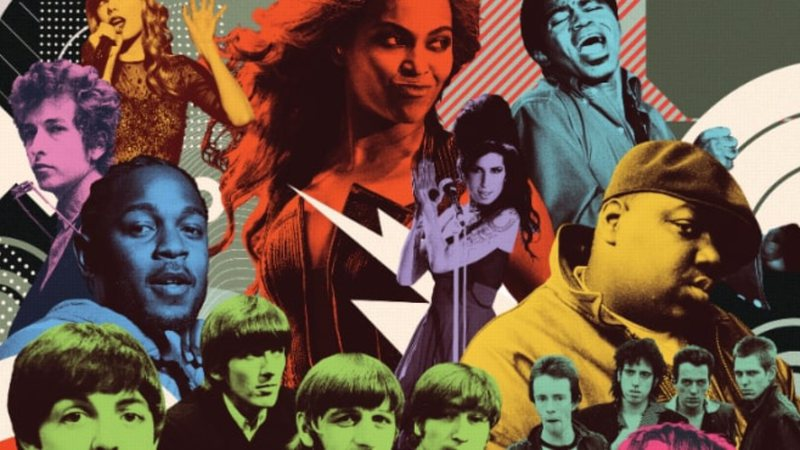

500 Melhores Álbuns de Todos os Tempos da Rolling Stone
Com o surgimento de novos gêneros, novos artistas e lançamentos de novos clássicos,
a lendária lista foi completamente refeita

A lista dos 500 Melhores Álbuns de Todos os Tempos da Rolling Stone foi originalmente publicada em 2003, com uma leve atualização em 2012.
Ao longo dos anos, foi o artigo mais lido - e discutido - na história da revista (em 2019, foram mais de 63 milhões de views no site).
Mas nenhuma lista é definitiva - os gostos mudam, novos gêneros surgem, a história da música é sempre reescrita. Então, decidimos refazer nossa lista de melhores discos do zero.
O eleitorado incluiu Beyoncé, Taylor Swift e Billie Eilish; artistas em ascensão como H.E.R., Tierra Whack e Lindsay Jordan do Snail Mail; assim como veteranos da música como Adam Clayton e The Edge do U2, Raekwon do Wu-Tang Clan, Gene Simmons, e Stevie Nicks.
Para isso, recebemos e tabulamos os top 50 discos de mais de 300 artistas, produtores, críticos e figuras da indústria musical (desde radialistas a donos de selos, como o CEO da Atlantic Recods, Craig Kallman).
Veja a lista com os 5 melhores
- Marvin Gaye, 'What's Going On' (1971)
- The Beach Boys, 'Pet Sounds' (1966)
- Joni Mitchell, 'Blue' (1971)
- Stevie Wonder, 'Songs in the Key of Life' (1976)
- The Beatles, 'Abbey Road' (1969)
Veja a lista com os 5 melhores
- Marvin Gaye, 'What's Going On' (1971)
- The Beach Boys, 'Pet Sounds' (1966)
- Joni Mitchell, 'Blue' (1971)
- Stevie Wonder, 'Songs in the Key of Life' (1976)
- The Beatles, 'Abbey Road' (1969)
Marvin Gaye, 'What's Going On' (1971)
The Beach Boys, 'Pet Sounds' (1966)
Joni Mitchell, 'Blue' (1971)
Stevie Wonder, 'Songs in the Key of Life' (1976)
The Beatles, 'Abbey Road' (1969)
ROCK
The Beach Boys, 'Pet Sounds' (1966)
The Beatles, 'Abbey Road' (1969)
SOUL
Marvin Gaye, 'What's Going On' (1971)
FOLK
Joni Mitchell, 'Blue' (1971)
R&B
Stevie Wonder, 'Songs in the Key of Life' (1976)
Você pode acessar a matéria completa clicando aqui
Veja nossos produtos disponíveis em produtos
Registre-se e fique por dentro das atualizações cadastro
baixar PDF
Ministério da Saúde orienta.
Tome H2O
😎